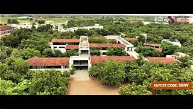
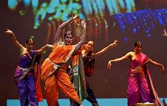

Computer Science
& Engineering
Build intelligent systems, beautiful software, and the technical confidence to solve meaningful problems.
Explore department ↗Women who build tomorrow
A technology-first learning community in Warangal where ambitious women turn questions into discoveries, ideas into impact, and potential into careers.

A different kind of advantage
SRITW is more than a campus. It is a close-knit, future-facing community where every student is encouraged to ask brave questions, make useful things, and find the confidence to take up space in the world.
Meet our community ↗When women learn together, they create possibilities for everyone.
— The SRITW communityLearn by doing
Strong fundamentals meet practical projects, specialist labs, collaborative studios, and an honest view of the industries you want to shape.
Build intelligent systems, beautiful software, and the technical confidence to solve meaningful problems.
Explore department ↗From embedded systems to connected devices, learn how the world communicates.
Explore department ↗Design smarter energy systems and power the next generation of progress.
Explore department ↗Create resilient spaces, structures, and sustainable infrastructure for people.
Explore department ↗Why choose us?
Mentorship and accessible guidance that turns academic challenge into confidence.
Modern, hands-on spaces for experimenting, testing, building, and starting again.
Industry exposure, internships, communication practice, and projects with purpose.
Clubs, sport, leadership, culture, and a community that gives every voice room.
Life at SRITW
From hackathons to harvest festivals, campus life gives your curiosity a stage and your friendships a home.

Culture / CelebrationBring your whole self.Innovation & technology hub
Our students turn “what if?” into working prototypes through peer-led coding clubs, robotics builds, research groups, startup mentoring, and a culture that celebrates the first imperfect version.
Visit the hub ↗From campus to career
We help students translate capability into opportunity with a practical career journey from the first semester to the first offer.

A launchpad, not a finish line
— Ananya Reddy ECE · Class of 2024
See student stories ↗Student achievements
Every award, certification, competition, and courageous first attempt adds to the story our students are writing.
Finalists · 2024
↗18 student projects
↗Champions · 2024
↗1,200+ credentials
↗On the calendar
Hands-on lab · 10:00 AM · Main auditorium
Campus celebration · 4:00 PM · Open grounds
Parents and students · 11:00 AM · Seminar hall
Your next chapter starts here
Take the first step towards a career built on knowledge, confidence, and possibility.
Apply now ↗Let’s connect
Visit our campus near Ananthasagar, Warangal, or send us a question. Our admissions team is ready to help.